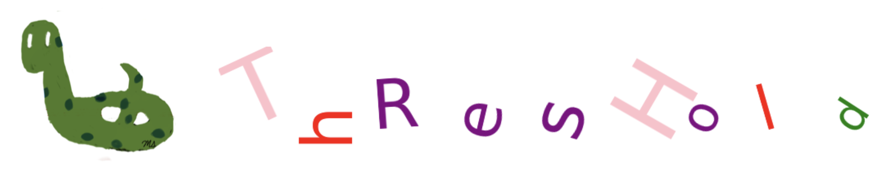
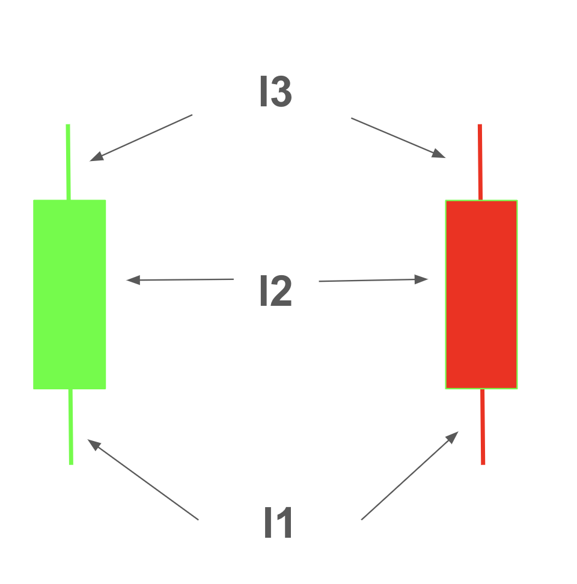
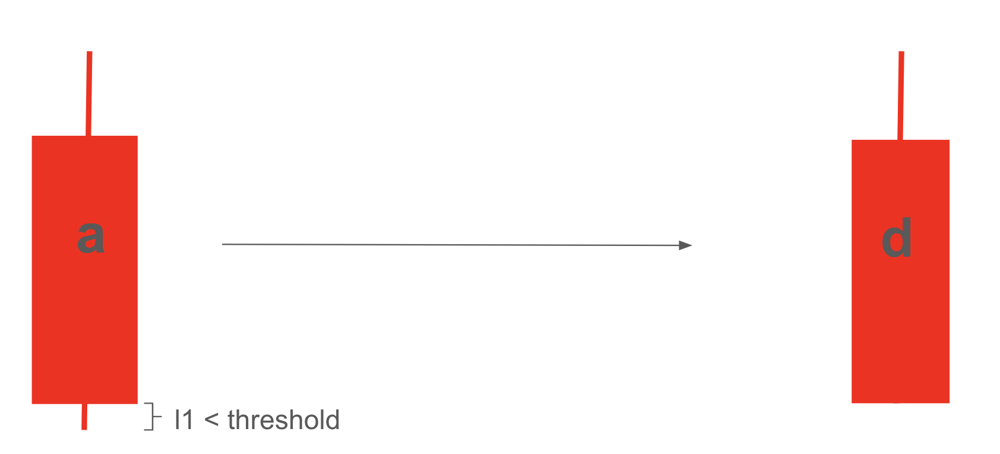

Question-1: Threshold#

import yfinance as yf
import numpy as np
import matplotlib.pyplot as plt
import pandas as pd
import statistics
from sklearn.metrics import accuracy_score
Title#
Threshold-Based Pattern Mining for Stock Market Candlestick Analysis
Abstract#
Pattern mining is an essential method for uncovering meaningful patterns in historical stock data. Among various techniques, candlestick analysis is widely used to capture daily stock price movements—open, high, low, and close—through a coded representation. However, small, insignificant differences in these values can impact the pattern coding and, consequently, predictions
This project introduces a threshold-based approach to encoding and pattern mining for candlesticks, aiming to mitigate the influence of minor fluctuations. By optimizing a threshold to exclude minimal price differences, we aim to improve pattern reliability and maximize returns. Performance is evaluated through backtesting, with a focus on determining the ideal threshold for enhanced accuracy in stock price forecasting.
Data#
def get_training_test_data(stock='AMZN', start='2019-1-1', end='2021-1-31', training_ratio=0.96):
df = yf.Ticker(stock).history(start=start, end=end)
df = df.iloc[:,:-3]
df.reset_index(inplace=True)
df['Date'] = [i.date() for i in df.Date]
df['fcc'] = [np.sign(df.Close.loc[i+1]-df.Close.loc[i]) for i in range(len(df)-1)]+[np.nan]
training_length = int(len(df)*training_ratio)
training_data = df.iloc[:training_length,:]
test_data = df.iloc[training_length:,:]
test_data.reset_index(inplace=True, drop=True)
return (training_data, test_data)
df_train, df_test = get_training_test_data()
df_train.shape, df_test.shape
((503, 6), (21, 6))
Encoding with Threshold#
Encoding can be performed based on the lengths of the lower shadow (\(l1\)), body (\(l2\)), and upper shadow (\(l3\)), while disregarding segments with small sizes.

For example, if \(l1 = close-low\) is smaller than a defined threshold for a red candlestick with code ‘a’, \(l1\) can be ignored and set to 0, changing the candlestick’s code to ‘d’.

def encoder_threshold(hp, op, cp, lp, threshold_pct=0.01):
threshold = threshold_pct * cp
l1 = min(op,cp) - lp
l2 = max(op,cp) - min(op,cp)
l3 = hp - max(op,cp)
if (l1 > threshold) & (l2 > threshold) & (l3 > threshold):
if op > cp: return 'a'
if cp > op: return 'e'
elif (l1 <= threshold) & (l2 > threshold) & (l3 > threshold):
if op > cp: return 'd'
if cp > op: return 'h'
elif (l1 > threshold) & (l2 > threshold) & (l3 <= threshold):
if op > cp: return 'b'
if cp > op: return 'f'
elif (l1 > threshold) & (l2 <= threshold) & (l3 > threshold):
return 'i'
elif (l1 <= threshold) & (l2 > threshold) & (l3 <= threshold):
if op > cp: return 'c'
if cp > op: return 'g'
elif (l1 > threshold) & (l2 <= threshold) & (l3 > threshold):
return 'i'
elif (l1 > threshold) & (l2 <= threshold) & (l3 <= threshold):
return 'j'
elif (l1 < threshold) & (l2 < threshold) & (l3 < threshold):
return 'k'
elif (l1 < threshold) & (l2 < threshold) & (l3 > threshold):
return 'l'
def df_encoder_threshold(data, threshold_pct=0.01):
data_ = data.copy()
encoder_list = []
for i in data_.index:
hp, op, cp, lp = data_[['High','Open', 'Close', 'Low']].loc[i]
encoder_list.append(encoder_threshold(hp, op, cp, lp, threshold_pct))
data_['code'] = encoder_list
return data_
df_train_ext = df_encoder_threshold(df_train, threshold_pct=0.03)
df_train_ext.head()
| Date | Open | High | Low | Close | fcc | code | |
|---|---|---|---|---|---|---|---|
| 0 | 2019-01-02 | 73.260002 | 77.667999 | 73.046501 | 76.956497 | -1.0 | g |
| 1 | 2019-01-03 | 76.000504 | 76.900002 | 74.855499 | 75.014000 | 1.0 | k |
| 2 | 2019-01-04 | 76.500000 | 79.699997 | 75.915497 | 78.769501 | 1.0 | k |
| 3 | 2019-01-07 | 80.115501 | 81.727997 | 79.459503 | 81.475502 | 1.0 | k |
| 4 | 2019-01-08 | 83.234497 | 83.830498 | 80.830498 | 82.829002 | 1.0 | k |
df_train_ext.code.value_counts()
code
k 466
g 14
c 12
j 6
l 4
d 1
Name: count, dtype: int64
df_train_ext = df_encoder_threshold(df_train, threshold_pct=0.01)
df_train_ext.head()
| Date | Open | High | Low | Close | fcc | code | |
|---|---|---|---|---|---|---|---|
| 0 | 2019-01-02 | 73.260002 | 77.667999 | 73.046501 | 76.956497 | -1.0 | g |
| 1 | 2019-01-03 | 76.000504 | 76.900002 | 74.855499 | 75.014000 | 1.0 | d |
| 2 | 2019-01-04 | 76.500000 | 79.699997 | 75.915497 | 78.769501 | 1.0 | h |
| 3 | 2019-01-07 | 80.115501 | 81.727997 | 79.459503 | 81.475502 | 1.0 | g |
| 4 | 2019-01-08 | 83.234497 | 83.830498 | 80.830498 | 82.829002 | 1.0 | j |
df_train_ext.code.value_counts()
code
k 210
g 81
c 71
j 47
l 29
b 14
f 13
h 12
i 10
d 8
a 6
e 2
Name: count, dtype: int64